文字
背景
行間


校長花ごよみ
平成31年度SSH指定校の内定について
昨日、文部科学省から平成31年度スーパーサイエンスハイスクール（SSH）指定校の内定について報道発表がありました。1つには、SSHの平成31年度基礎枠の指定校として本校が内定されました。これまで、多くのご指導ご助言をいただいたすべての方々にお礼申しあげます。第1期の5年間と今年度の経過措置１年間で培ってきた研究実績をさらに発展・普及させるためにこの1年間をかけて全校体制で準備してきた計画を来年度から指定を受けて実施できる喜びとともに、責任の重さに身が引き締まる思いです。さらに、今回の指定においては、平成31年度科学技術人材育成重点枠（高大接続枠）に、千葉県立船橋高等学校が幹事校、他の県内の本校を含めた県立SSH４校が参画校として、千葉大学を接続大学としたコンソーシアムが内定されました。本校においては、いずれの事業においても、将来の国際的な科学技術人材を育成するために本校だけでなく県内で学ぶ子どもたちに広く成果を普及できるよう関係機関と連携しながら、すべては、子どもたちのために頑張っていきたいと思います。これからも皆様のご支援ご協力をよろしくお願いいたします。
桜のある風景７
ここ数日の天候を表す言葉としては、「花冷え」、「花曇り」といった季語が最もあってはまっている気がします。その影響か桜の開花状況も少し緩やかになった気がしています。今日は、正門付近の状況を中心にお伝えします。正門手前（写真上段左）道路に面した木々（写真上段中央）は、まだ二分咲きといった程度。正門を入ってすぐの古木（写真上段右）は三分咲き程度です。


 周辺の状況として学思館の周りの木々（写真下段左、中央）や駐輪場周辺の木々（写真下段右）も同様の状況です。
周辺の状況として学思館の周りの木々（写真下段左、中央）や駐輪場周辺の木々（写真下段右）も同様の状況です。


周辺の状況として学思館の周りの木々（写真下段左、中央）や駐輪場周辺の木々（写真下段右）も同様の状況です。 桜のある風景６
本校の桜（ソメイヨシノ等）の今日の状況をお届けします。やはり場所により、木の状況によりかなり違いが見られます。


 駐輪場脇の東側斜面の上にある桜は、開花したものや明日にでも開花するものが多い状況です。（写真上段左、中央）
駐輪場脇の東側斜面の上にある桜は、開花したものや明日にでも開花するものが多い状況です。（写真上段左、中央）
 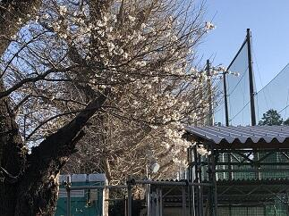
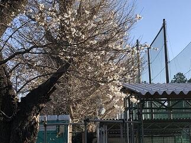 道路に面した南側の木々は二分から三分咲き（写真上段右 地域交流棟脇）（写真下段左 南側テニスコート脇）,野球場脇の通用門近くの桜は五分咲き（写真下段中央）、中庭の桜の古木は二分咲き程度です。（写真下段右）
道路に面した南側の木々は二分から三分咲き（写真上段右 地域交流棟脇）（写真下段左 南側テニスコート脇）,野球場脇の通用門近くの桜は五分咲き（写真下段中央）、中庭の桜の古木は二分咲き程度です。（写真下段右）
駐輪場脇の東側斜面の上にある桜は、開花したものや明日にでも開花するものが多い状況です。（写真上段左、中央）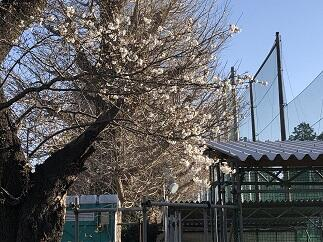道路に面した南側の木々は二分から三分咲き（写真上段右 地域交流棟脇）（写真下段左 南側テニスコート脇）,野球場脇の通用門近くの桜は五分咲き（写真下段中央）、中庭の桜の古木は二分咲き程度です。（写真下段右） 桜のある風景５
今日はこれまでにご紹介した桜の咲いている場所をお教えしましょう。


 １で紹介した河津桜は学思館の脇の木です。外の道路からもよく見える木です。(写真上段左)
１で紹介した河津桜は学思館の脇の木です。外の道路からもよく見える木です。(写真上段左)
２で紹介した寒桜はプールの奥、野球場の得点板の奥にある木です。（写真上段右）
３で紹介した河津桜は、第2体育館脇で弓道場の上の斜面の木です。（写真下段左）
４で紹介したシナミザクラは、記念館の脇にある木です。（写真下段右）
お立ち寄りの際によろしければご覧ください。
１で紹介した河津桜は学思館の脇の木です。外の道路からもよく見える木です。(写真上段左)２で紹介した寒桜はプールの奥、野球場の得点板の奥にある木です。（写真上段右）
３で紹介した河津桜は、第2体育館脇で弓道場の上の斜面の木です。（写真下段左）
４で紹介したシナミザクラは、記念館の脇にある木です。（写真下段右）
お立ち寄りの際によろしければご覧ください。
桜のある風景４
 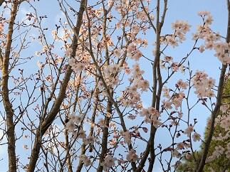
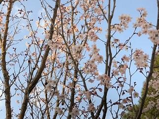 今日の桜情報は、まずは、ソメイヨシノの様子からご報告しますと、写真ではわかりずらいですが蕾（写真左）が緑色から濃いピンク色になってきました。蕾の色がうすいピンク色になるといよいよ開花です。また、別の場所にあるシナミザクラ（写真中央、右）も咲き始めました。
今日の桜情報は、まずは、ソメイヨシノの様子からご報告しますと、写真ではわかりずらいですが蕾（写真左）が緑色から濃いピンク色になってきました。蕾の色がうすいピンク色になるといよいよ開花です。また、別の場所にあるシナミザクラ（写真中央、右）も咲き始めました。 3.14159 26535 89793 23846 …
今日3月14日は、多くの国で「円周率の日」とされています。
3.14159 26535 89793 23846 26433 83279 50288 …のその最初の3桁の並びに合わせて制定されています。他に、円周率近似値の日（7月22日、12月21日（閏年は12月20日）など）があります。円周率は円の直径に対する円周の比として定義される数学定数です。もちろん数学だけでなく科学の様々な分野において重要な数学定数です。表記は π で表されますが、これはギリシア語の円周を表す言葉の περίμετρος（ペリメトロス）の頭文字からとったものです。
円周率は、無理数であり、その小数展開は循環しない小数であり、合わせて、どんな有理係数の代数方程式の解ともならない超越数でもあります。数学的にとても魅力的な数です。さて、その円周率を必要な精度まで求めるのには、いろいろな方法があります。アルキメデスの方法として知られているものは、円周が、内接する正ｎ角形の周の長さより長く外接する正ｎ角形の周の長さよりは短いことを利用して円周の取り得る値を挟み込む方法です。2003年東京大学の前期入試の理系の第6問で「円周率が3.05より大きいことを証明せよ」という問題が出たのを思い出します。また、逆正接関数の区分求積法やべき級数展開を用いる方法や派生してマチンの公式など多くの公式が発見されています。いずれにしてもこんな日に円周率について興味を持って調べてみるのはいかがですか。
3.14159 26535 89793 23846 26433 83279 50288 …のその最初の3桁の並びに合わせて制定されています。他に、円周率近似値の日（7月22日、12月21日（閏年は12月20日）など）があります。円周率は円の直径に対する円周の比として定義される数学定数です。もちろん数学だけでなく科学の様々な分野において重要な数学定数です。表記は π で表されますが、これはギリシア語の円周を表す言葉の περίμετρος（ペリメトロス）の頭文字からとったものです。
円周率は、無理数であり、その小数展開は循環しない小数であり、合わせて、どんな有理係数の代数方程式の解ともならない超越数でもあります。数学的にとても魅力的な数です。さて、その円周率を必要な精度まで求めるのには、いろいろな方法があります。アルキメデスの方法として知られているものは、円周が、内接する正ｎ角形の周の長さより長く外接する正ｎ角形の周の長さよりは短いことを利用して円周の取り得る値を挟み込む方法です。2003年東京大学の前期入試の理系の第6問で「円周率が3.05より大きいことを証明せよ」という問題が出たのを思い出します。また、逆正接関数の区分求積法やべき級数展開を用いる方法や派生してマチンの公式など多くの公式が発見されています。いずれにしてもこんな日に円周率について興味を持って調べてみるのはいかがですか。
桜のある風景３


 校内にある多くの桜は、同じ種類でも、木が育った場所や環境で咲く時期が、かなりずれます。今日ご紹介する桜は、風景１でご紹介した河津桜よりは日当たりが、良い場所で咲いているので、葉がかなり目立っています。なお、同じ環境にある本校のソメイヨシノの蕾も膨らみ始めた状態です。このソメイヨシノの桜の開花予想については、「2月1から毎日の最高気温を足していき、合計して600度になったときに桜が開花する」と600度の法則があると言われています。であるとすると昨日までに500度前後なので、これから12から14度くらいの平均でいけば７，８日後くらいには開花するのではないかと思われます。最新の開花予想と合わせて観察していきたいと思います。
校内にある多くの桜は、同じ種類でも、木が育った場所や環境で咲く時期が、かなりずれます。今日ご紹介する桜は、風景１でご紹介した河津桜よりは日当たりが、良い場所で咲いているので、葉がかなり目立っています。なお、同じ環境にある本校のソメイヨシノの蕾も膨らみ始めた状態です。このソメイヨシノの桜の開花予想については、「2月1から毎日の最高気温を足していき、合計して600度になったときに桜が開花する」と600度の法則があると言われています。であるとすると昨日までに500度前後なので、これから12から14度くらいの平均でいけば７，８日後くらいには開花するのではないかと思われます。最新の開花予想と合わせて観察していきたいと思います。 桜のある風景２
 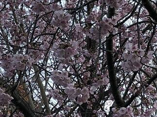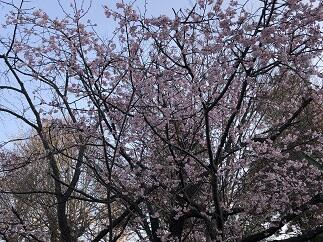今日は、種類が特定できませんが、たぶん寒桜かなと思われる桜をご紹介します。
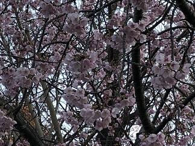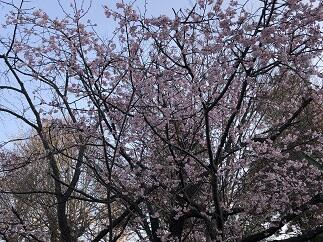今日は、種類が特定できませんが、たぶん寒桜かなと思われる桜をご紹介します。 桜のある風景１


 桜の開花が佐倉高校でもちらほらと見られるようになってきました。桜といってもそれぞれ咲く時期や咲く場所、色彩や咲き方がいろいろであり、それぞれに趣があります。今年は例年に比べ桜の開花が早いとのこと。これから、何回か校内の桜の様子をお届けしていきたいと思います。今回は校内の河津桜をご紹介します。
桜の開花が佐倉高校でもちらほらと見られるようになってきました。桜といってもそれぞれ咲く時期や咲く場所、色彩や咲き方がいろいろであり、それぞれに趣があります。今年は例年に比べ桜の開花が早いとのこと。これから、何回か校内の桜の様子をお届けしていきたいと思います。今回は校内の河津桜をご紹介します。 受検生の皆さんお疲れさまでした。
受検生の皆さん検査お疲れ様でした。入学許可候補者の発表は3月6日（水）の午前9時からとなります。


千葉県公立高等学校後期入学者選抜受検生の皆さんへ
本日2月28日（木）は千葉県公立高等学校後期入学者選抜検査が行われます。佐倉高校付近では、7:00時点で天候は小雨、電車は平常運転を行っています。受検生の皆さんは気を付けてお越しください。
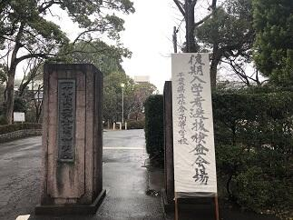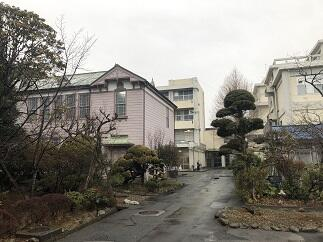
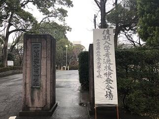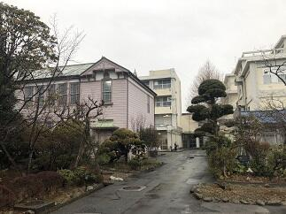
千葉県公立高等学校後期入学者選抜で佐倉高校を志願する皆様へ
今日2月22日は、千葉県公立高等学校後期入学者選抜の志願受付日です。本日の受付時間は午後4時30分までとなっています。受付場所は、地域交流施設（写真右）となっています。正門（写真左）を入ってまっすぐ進むと案内板がありますので（写真中央）そこを右手に進んで地域交流施設へ進んでください。気を付けてお越しください。
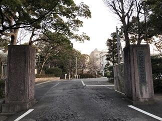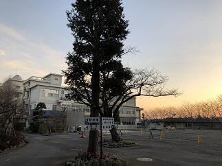
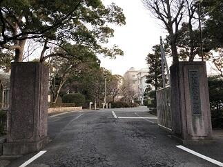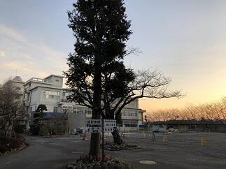
佐倉高校志願者の皆さんへ（2月4日）

 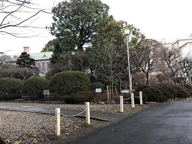今日は、千葉県公立高等学校前期入学者選抜の志願受付の第2日です。本日の受付時間は午後4時までとなっています。受付場所は、記念館（写真右）となっています。正門（写真中央）を入ってまっすぐ進むと記念館の屋根が左手上方に見えます（写真右）。気を付けてお越しください。
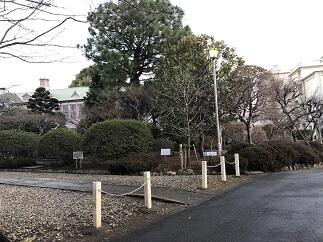今日は、千葉県公立高等学校前期入学者選抜の志願受付の第2日です。本日の受付時間は午後4時までとなっています。受付場所は、記念館（写真右）となっています。正門（写真中央）を入ってまっすぐ進むと記念館の屋根が左手上方に見えます（写真右）。気を付けてお越しください。 立春大吉 春一番？
今日は、二十四節気の第一「立春」です。朝から南風が強く昨日より15℃以上気温が上昇しています。関東の「春一番」は、2月4日頃の「立春」から3月21日頃の「春分」までの間に、①日本海で低気圧が発達し、②初めて8メートル以上の南よりの風が吹き、③気温が前日より高くなる現象のことです。となると、もしかしたら、今までで一番早い「春一番」になるかもしれませんね。（ちなみに金沢地方気象台の発表では北陸地方では昨年より10日早く、今日「春一番」が吹いたそうです。）
節分
 今日は二十四節気の第24番目「大寒」の最終日です。明日（2月4日）から二十四節気の第1番目「立春」です。つまり暦の上では、今日は季節が冬から春に移り変わるときを表す「節分」です。
今日は二十四節気の第24番目「大寒」の最終日です。明日（2月4日）から二十四節気の第1番目「立春」です。つまり暦の上では、今日は季節が冬から春に移り変わるときを表す「節分」です。節分は、元来，季節の移り変るときをさしていますので，この立春のほかに立夏、立秋、立冬のそれぞれの前日を指していたそうです。今は一般的に立春の前日だけを言います。春は年のはじまりであり、季節の変わり目には邪気が生じるという考えから、節分に民間では柊鰯（鬼が臭いものととがったものを嫌うと考えられていたので、柊の枝の先に焼いた鰯の頭を刺してもの。）を門口にかざし、日暮れに「豆まき」をして厄払いと招福を行う習慣があり、特に、「豆まき」をされる家が多いのではないでしょうか。
また、節分に「恵方」（歳徳神がいらっしゃる方角）を向いて無言で食すると縁起が良いという「恵方巻き」でおなじみの「恵方」は今年の干支が己亥（つちのとい）なので東北東と真東の間の方位になります。わたしの家から佐倉高校はちょうどこの方向なのでとっても良い感じがしています。明日からもみんなで良い年にしていきたいですね。
佐倉高校志願者の皆さんへ（2月1日）
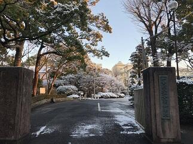
 ２月１日、４日と千葉県公立高等学校前期入学者選抜の志願受付を行います。本校を志願される皆さんは正門(写真左)を入られてまっすぐに進むと看板（写真中央）がありますのでそれを右手に進んで地域交流施設（写真右）へお越しください。あわてず気を付けてお越しください。
２月１日、４日と千葉県公立高等学校前期入学者選抜の志願受付を行います。本校を志願される皆さんは正門(写真左)を入られてまっすぐに進むと看板（写真中央）がありますのでそれを右手に進んで地域交流施設（写真右）へお越しください。あわてず気を付けてお越しください。
２月１日、４日と千葉県公立高等学校前期入学者選抜の志願受付を行います。本校を志願される皆さんは正門(写真左)を入られてまっすぐに進むと看板（写真中央）がありますのでそれを右手に進んで地域交流施設（写真右）へお越しください。あわてず気を付けてお越しください。 如月朔日朝一でうれしかったこと。
 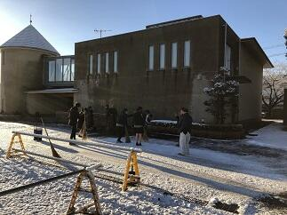
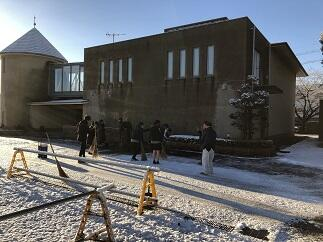 感覚としてちょっと前に年が明けたと思っていたらもう2月です。昨夜からは今年はじめての雪が降り積雪となりました。今日は千葉県公立高等学校前期入学者選抜の志願者受付の日です。地域交流施設で受付をおこないますが、志願者のために教職員・生徒が朝早くから雪かきをしてくれました。今日は朝からとっても嬉しく本校に来てよかったと思うと同時に、本校の教職員・生徒さんたちを誇りに思いました。
感覚としてちょっと前に年が明けたと思っていたらもう2月です。昨夜からは今年はじめての雪が降り積雪となりました。今日は千葉県公立高等学校前期入学者選抜の志願者受付の日です。地域交流施設で受付をおこないますが、志願者のために教職員・生徒が朝早くから雪かきをしてくれました。今日は朝からとっても嬉しく本校に来てよかったと思うと同時に、本校の教職員・生徒さんたちを誇りに思いました。 雪景色20190201
 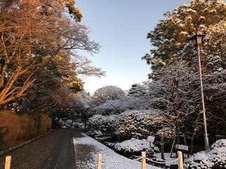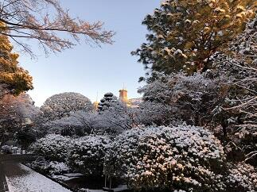
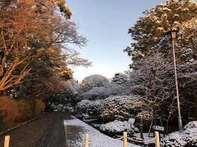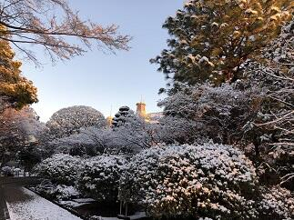 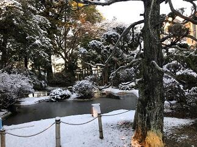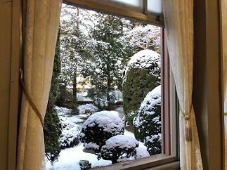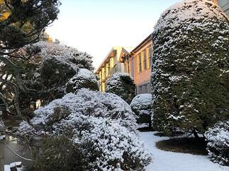
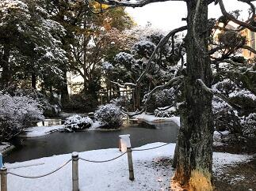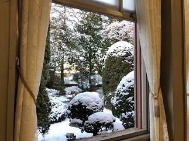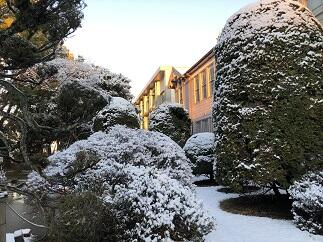
 今年初めての雪景色をご堪能ください。写真１段目は正門付近から、2段目は東郷池、3段目は記念館の様子です。
今年初めての雪景色をご堪能ください。写真１段目は正門付近から、2段目は東郷池、3段目は記念館の様子です。 千葉県高等学校ラグビーフットボール大会・新人大会準々決勝
投稿日時 : 2019/01/19
 sakura-h
sakura-h
 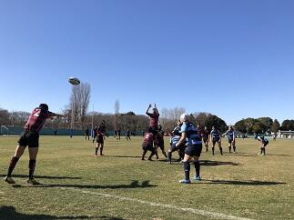
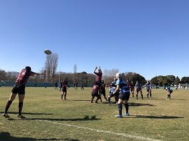

本日１月１９日（土）は３年生にとってとても大切な大学入試センター試験の第１日目でした。風はかなり吹いていたものの晴天で全国的にもまずまずの天候だったようです。受験生の皆さんが十分に力を発揮されていることを祈ります。
さて、天台スポーツセンターにおいては千葉県高等学校ラグビーフットボール大会・新人大会準々決勝が行われました。佐倉高校は、八千代松陰高校と対戦しました。前半は互いに１トライづつ決め、前半の得点は５－５のまさに一進一退の互角の戦いでした。後半に入ると自陣内での攻防が多くなり八千代松陰高校に２つのトライとその後のコンバージョンゴールも決められ１４点差で残念ながら敗れてしまいましたが、次へ繋がる良い試合だったと思います。応援に来ていただいた保護者や佐倉高校OBの方々、いつも応援やご支援ありがとうございます。今後ともよろしくお願いたします。
防災とボランティアの日
24年前の今日、1995年1月17日午前5時46分に淡路島北端を震源とする兵庫県南部地震が発生しました。この阪神・淡路大震災では、学生を中心としたボランティア活動が活発化し、「日本のボランティア元年」と言われました。これをきっかけに、ボランティア活動への認識を深め、災害への備えの充実強化を図る目的で、「防災とボランティアの日」の制定が1995年12月の閣議で決定され、翌1996年から実施されました。また、さらに関連して今日は、「おむすびの日」でもあります。なぜ今日がおむすびの日として選ばれたのかというと、阪神大震災のその当時、混乱する現場でボランティアの方々が被災した方々に支援として、まずは食料だろうと、それもすぐに食べられて温かみが伝わるものは何が良いか考えられ、炊き出しでは、おむすびが提供されたそうです。現在のようにボランティア活動の受け入れ体制も何も無かった状況でボランティアの方々が、思いやりの心と現場で困っている方々に何が必要か想像力を働かせながら献身的に働かれたことにより未曾有の危機的な状況を乗り越えてきたのでしょう。それにより多くの被災者が励まされたことから、いつまでもこの善意を忘れないため、1月17日を記念日としたそうです。人はどんな状況でも誰かのために動いたときに持てる力を総合的に発揮してすばらしい結果を出すことができるんですね。
災害は、もちろん無いにこしたことはありませんが、過去のいろいろな教訓から学びそれらを生かせるように、常に備えをしておくことが重要です。そして、普段どおりの生活をできることに感謝を忘れないことが最も重要だと思います。
災害は、もちろん無いにこしたことはありませんが、過去のいろいろな教訓から学びそれらを生かせるように、常に備えをしておくことが重要です。そして、普段どおりの生活をできることに感謝を忘れないことが最も重要だと思います。
小正月に思う
１月15日は、20年前の1999年までは成人の日であり、国民の祝日として行事が行われていました。2000年からは、ハッピーマンデー制度導入に伴い1月第2月曜日、つまり、その年の1月8日から14日までのうち月曜日に該当する日に変更されました。今年は昨日が成人の日でした。また、成人年齢を20歳から18歳に引き下げる改正民法が昨年6月13日に参院本会議で可決、成立し施行は2022年4月1日です。これに伴い2022年度の成人式はどのように行われるのか話題になっていたのはつい最近ですね。時が経つのは早いもので、お正月の行事が一区切りとなるのがこの小正月です。そんなことを朝、小豆粥を食べながら考えていました。さて、話は変わりますが、この3連休中も、生徒はそれぞれの目標達成のために努力するとともに、実力を発揮して活躍をしてくれています。ラグビー部は、1月12日（土）に東京学館浦安高校に３２−１２で勝ち県ベスト８になりました。1月19日（土）に八千代松陰高校とベスト４をかけて天台スポーツセンターで対戦します。応援よろしくお願いします。男子バスケットボール部は県大会でベスト16に入り、男子バレー部も地区予選を勝ち上がり2月に行われる県大会への出場を決めるなど良く頑張っています。本当にすばらしい。
なお、この1月19日、20日は、いよいよ大学入試センター試験が行われます。3年生は今まで培ってきた実力を十二分に発揮できるよう健康に気を付け自分を信じて試験に臨んでほしいと思います。
なお、この1月19日、20日は、いよいよ大学入試センター試験が行われます。3年生は今まで培ってきた実力を十二分に発揮できるよう健康に気を付け自分を信じて試験に臨んでほしいと思います。
氷結
 東郷池の水を濾過するために水を循環させていますが、どうしても池の表面で流れが緩やかな部分があり、このところの寒気の強まりでせいで、池の表面の3分の１が氷結しました。(左写真)ちなみに佐倉高校周辺の早朝の気温は、マイナス３℃でした。また、このところ１７日間連続で雨が降っていないこともあり、乾燥注意報が継続して出されています。空気が乾燥すると、のどの粘膜の防御機能が低下し、インフルエンザにかかりやすくなるので手洗いや適度に水分を補給することが重要です。また、体のウイルスへの抵抗力を高めるために、十分な休養とバランスのとれた栄養摂取を日ごろから心がけましょう。あと、免疫力を高めるために腸内環境を整えることが大切です。そのためにも食べ物に気をつけるだけでなくお腹を冷やさないようにしましょう。みんなでこの冬を元気に乗り越えましょう。
東郷池の水を濾過するために水を循環させていますが、どうしても池の表面で流れが緩やかな部分があり、このところの寒気の強まりでせいで、池の表面の3分の１が氷結しました。(左写真)ちなみに佐倉高校周辺の早朝の気温は、マイナス３℃でした。また、このところ１７日間連続で雨が降っていないこともあり、乾燥注意報が継続して出されています。空気が乾燥すると、のどの粘膜の防御機能が低下し、インフルエンザにかかりやすくなるので手洗いや適度に水分を補給することが重要です。また、体のウイルスへの抵抗力を高めるために、十分な休養とバランスのとれた栄養摂取を日ごろから心がけましょう。あと、免疫力を高めるために腸内環境を整えることが大切です。そのためにも食べ物に気をつけるだけでなくお腹を冷やさないようにしましょう。みんなでこの冬を元気に乗り越えましょう。 春の七草
七草（ななくさ）は、人日の節句（1月7日）の朝に、7種の野草あるいは野菜が入った粥（七草粥)を食べる風習のこと。七草粥は新年の無病息災・豊年を願っていただくわけですがお正月に御節料理で疲れた胃腸にやさしく、冬に不足しがちな栄養を野菜から摂れるということで体調を整える意味でも良いとされています。ちなみに、歴史や地方によって多少異なるようですが、一般的に春の七草とは「芹（せり）、薺（なづな）、御形（ごぎょう）、繁縷（はこべら）、仏座（ほとけのざ）、菘（すずな）、蘿蔔（すずしろ）」の七種の植物を言います。
小寒
 今年の１月６日は「小寒」で「寒の入り」となります。寒（かん）とは、暦の上で寒さが最も厳しいとされる期間のことで小寒から立春の日の前日までの約30日間を言います。また、小寒とは、「しょうかん」と読み、二十四節気（にじゅうしせっき）の第23節目です。小寒は、太陽暦の1月6日ごろに始り、大寒（1月20日ごろ）の前日までの約15日間、またはこの期間の第1日目を指します。
今年の１月６日は「小寒」で「寒の入り」となります。寒（かん）とは、暦の上で寒さが最も厳しいとされる期間のことで小寒から立春の日の前日までの約30日間を言います。また、小寒とは、「しょうかん」と読み、二十四節気（にじゅうしせっき）の第23節目です。小寒は、太陽暦の1月6日ごろに始り、大寒（1月20日ごろ）の前日までの約15日間、またはこの期間の第1日目を指します。また、今日は3年ぶり（前回は2016年3月9日）の部分日食で、全国で天候が良ければ観測できます。今年は部分日食の観測の機会が2回あるそうで、２回目は12月26日だそうです。東京近辺では１０：０６くらいが食の最大になります。（部分日食についてや安全な観測の仕方について詳しくは国立天文台のWebページでご確認ください。）
左の写真は、部分日食を撮ろうとレンズにフィルターを付けて、外で９：００から雲の切れ間を狙っていたところ、９：４５に雲が偶然切れた瞬間に撮れたものです。
明日から学校が始まります。お正月の間に養った鋭気で、皆で目標の実現に向けて、健やかに、朗らかにいきましょう。
御用始め


 今日は、佐倉は朝からとても寒くて通勤で学校に歩いている途中は目と耳が痛かったです。（凍っちゃうんじゃないかと思うほど）
今日は、佐倉は朝からとても寒くて通勤で学校に歩いている途中は目と耳が痛かったです。（凍っちゃうんじゃないかと思うほど）案の定、気温は氷点下だったようで東郷池も凍っていました。寒の入りが近いので朝晩の寒さが一段と厳しくなっているようです。特に室内と外の寒暖差が激しいので皆さんも健康に気を付けてお過ごしください。
初詣（合格祈願）
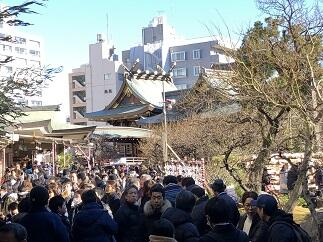 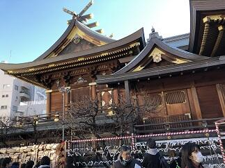昨日、今日と風もなく、暖かな日差しに恵まれ初詣にはとても良い天気になりました。私は、昨日は地元や県内の神社仏閣にお参りをし、今日はちょっと足を延ばして、東京の湯島天満宮（湯島天神）に佐倉高校の受験生の合格祈願に行ってきました。本殿にあがって合格祈願ができて良かったです。さすがに日本有数の天神様だけあって、多くの参拝者で賑わってました。受験生の皆さんは、試験で実力を発揮できるように健康に気を付けて頑張ってください。
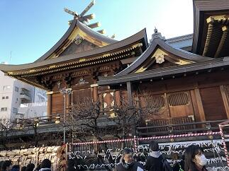昨日、今日と風もなく、暖かな日差しに恵まれ初詣にはとても良い天気になりました。私は、昨日は地元や県内の神社仏閣にお参りをし、今日はちょっと足を延ばして、東京の湯島天満宮（湯島天神）に佐倉高校の受験生の合格祈願に行ってきました。本殿にあがって合格祈願ができて良かったです。さすがに日本有数の天神様だけあって、多くの参拝者で賑わってました。受験生の皆さんは、試験で実力を発揮できるように健康に気を付けて頑張ってください。
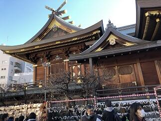昨日、今日と風もなく、暖かな日差しに恵まれ初詣にはとても良い天気になりました。私は、昨日は地元や県内の神社仏閣にお参りをし、今日はちょっと足を延ばして、東京の湯島天満宮（湯島天神）に佐倉高校の受験生の合格祈願に行ってきました。本殿にあがって合格祈願ができて良かったです。さすがに日本有数の天神様だけあって、多くの参拝者で賑わってました。受験生の皆さんは、試験で実力を発揮できるように健康に気を付けて頑張ってください。 謹賀新年（平成31年元旦）
 新年あけましておめでとうございます。今年もどうそよろしくお願いいたします。今年は平成31 己亥（つちのと・い）年です。しっかりと力をつけて次のステージに向けて頑張っていきましょう。
新年あけましておめでとうございます。今年もどうそよろしくお願いいたします。今年は平成31 己亥（つちのと・い）年です。しっかりと力をつけて次のステージに向けて頑張っていきましょう。 冬至
２０１８年12月22日の今日は、二十四節気の「冬至」の初日にも当たり、昼の時間が一年で一番短い日です。言い換えると夏至以来北半球から遠ざかり続けた太陽が南回帰線を折り返して、北半球に再び帰ってくる日です。この日を易では、陰暦10月に陰がきわまって11月の冬至に陽が初めて生じることから一陽来復(陽気が復活する時)としています。ですから、冬至にはいろいろな風習が受け継がれています。たとえば、「かぼちゃ」を食べるとか。 むかしは、作物が取れなくなる冬のこの時期に保存が利くかぼちゃはとても貴重でした。また、かぼちゃは栄養価が高く、食べれば身体が温まることを昔の人は経験から知っていました。厳しい冬を健康に乗り切れるように願いを込めてこの日にかぼちゃを食していたのでしょう。他にもいろいろ冬至に食べるといいとされる食べ物があります。だいこん、れんこん、にんじん、ぎんなん、かんてんなど「ん」がつくものなど、これらの食べ物は語呂がよく縁起のいい食べ物として取り入れられてきました。食物以外でも、「ゆず湯」につかり風邪予防するなどの風習がありますよね。いずれにしても、これら先人から受け継がれてきた知恵も活用して、みんなで、この冬を乗り切って明るい春を迎えましょう。
憩いのお菓子
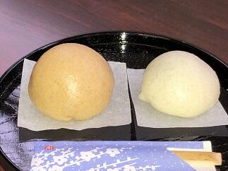２EFGの家庭基礎研究を受講している生徒さんたちが、今日はお饅頭を作って来てくれました。いつもありがとうございます。きめ細かくしっとりした餡と皮のほんのりした甘さとのバランスが絶妙で出来栄えは、すばらしいものでした。よく見るとおまんじゅうはそのフォルムがシンプルでかわいらしいですね。生徒さんの作品のすばらしさが伝わる表現と写真が撮れているか心配ですが感謝を込めて今回も載せさていただきました。
21世紀枠への感謝
先週14日金曜日に来春の第91回センバツ高校野球大会に出場する21世紀枠の各地区候補９校が発表されました。千葉県が所属する関東・東京地区からは、石岡一（茨城県）が選出されました。今回、本校は選外となりましたが、千葉県の代表として推薦していただいたこと、また、本件についてご支援・ご声援いただいた皆様に改めて感謝申し上げます。
15日付けのスポーツ報知の紙面でもこの件に関して記事が掲載されました。そこには、野球部の和田宗矩主将から「自分たちが活躍することで、長嶋さんに元気になってもらいたい。甲子園に出て、長嶋さんに応援に来ていただきたいです。」との来夏の目標に対するコメントが載せられていました。本校生徒が様々な目標を立てる上で、人のため社会のためになることを意識して自分の目標をしっかりと持っていることに頼もしさと誇りを感じました。皆さんと夢の実現に向けてひとつひとつ頑張っていきたいと思います。
15日付けのスポーツ報知の紙面でもこの件に関して記事が掲載されました。そこには、野球部の和田宗矩主将から「自分たちが活躍することで、長嶋さんに元気になってもらいたい。甲子園に出て、長嶋さんに応援に来ていただきたいです。」との来夏の目標に対するコメントが載せられていました。本校生徒が様々な目標を立てる上で、人のため社会のためになることを意識して自分の目標をしっかりと持っていることに頼もしさと誇りを感じました。皆さんと夢の実現に向けてひとつひとつ頑張っていきたいと思います。
気持ちの良い朝
久しぶりに晴れて気持ちの良い朝を迎えました。昨日のニュースでも南関東では日照不足が心配されています。日光や紫外線は、心や身体の健康管理にとても大切です。例えば、感情のバランスを調整する働きや体内時計の調整の働き持つ神経伝達物質のセロトニンや血中のカルシウム代謝を正常化させる働きを持つビタミンDの生成などに密接な関係があります。今日のように朝日を浴びて気持ち良いと感じるのもこんなことにも関係しているのかもしれませんね。
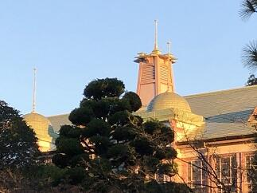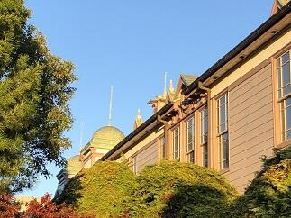
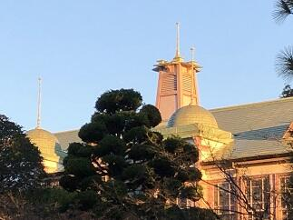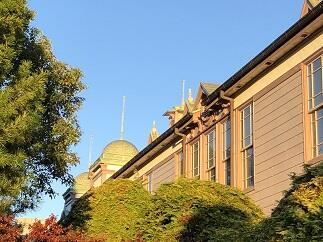
星に願いを2018
今年も「三大流星群」の一つの「ふたご座流星群」を観察できる時期になっています。国立天文台によると、特に多くの流星を見ることができるのは、今日13日の夜と14日の夜の２夜で、今年のふたご座流星群の活動が最も活発になるのは、12月14日21時頃と予想されています。天気予報では13日、14日とも夜は晴れで観察には大変良いようです。観察には月明りが気になりますが月が上弦のため夜半頃には沈み（千葉県では13日が21:40、14日が22:36）、その後はたいへん良い条件で流星を観察することができるでしょう。いずれの夜も、20時頃から流星が出現し始め、夜明け前まで出現が続くそうです。空の暗い場所で観察したときに見える流星の数は、最も多いときで1時間あたり40個程度と予想されるということです。楽しみですね。
さて、あなたは流れ星に何を願いますか。
さて、あなたは流れ星に何を願いますか。
初氷
今日は、また一段と寒さが厳しくなりました。(早朝の気温は１℃でした。)天気予報では午後から、冬将軍の影響で北関東から東京にかけて雪やみぞれが予想されています。
この季節は空気の乾燥や、急激な温度変化（暖かい室内から寒い室外への移動時など）への対策をして、風邪・インフルエンザなどにかからないように健康管理に注意していきましょう。


本校では、外の水たまりに今年初めて氷が張りました。（写真左は紅葉を取り込んだ初氷）庭の景色は、あんなに美しかった紅葉も一部を除いて冬枯れの佇まいとなり（写真中央）、東郷池（写真右は校舎が映る東郷池）の鯉たちは、最近はすっかり活動が鈍くなり水面近くに姿を見せなくなりました。自然は私たちに秋を惜しみつつも確実に冬の装いを見せ始めています。
この季節は空気の乾燥や、急激な温度変化（暖かい室内から寒い室外への移動時など）への対策をして、風邪・インフルエンザなどにかからないように健康管理に注意していきましょう。
本校では、外の水たまりに今年初めて氷が張りました。（写真左は紅葉を取り込んだ初氷）庭の景色は、あんなに美しかった紅葉も一部を除いて冬枯れの佇まいとなり（写真中央）、東郷池（写真右は校舎が映る東郷池）の鯉たちは、最近はすっかり活動が鈍くなり水面近くに姿を見せなくなりました。自然は私たちに秋を惜しみつつも確実に冬の装いを見せ始めています。
落葉舞い散る東郷池
いよいよ、紅葉が落葉になって地面や水面を美しく彩る季節となりました。見上げていた視線を足元に落として、その美しさに感動する一方で、掃除をする大変さに思いがめぐります。自然のなかで、たとえば山のなかに生える紅葉の落葉であれば、自然の食物連鎖のサイクルに任せておけば有効に活用されるので、いちいち掃除などしません。ところが、これが庭に生える樹木からの落葉となると、庭を落葉だらけにしておく訳にもいかず毎日掃除をするわけです。しかも、この季節はいったん綺麗に掃除しても、ひと風吹けばまた元通りという恐怖の体験を何度もする時期なのです。
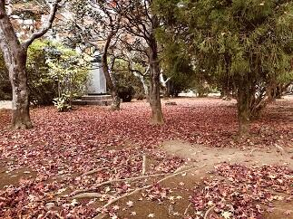

写真のとおり東郷池も同じ状況です。落葉の下を鯉が優雅に泳ぐ姿も一興かもしれませんが、これも鯉が見えればの話ですね。


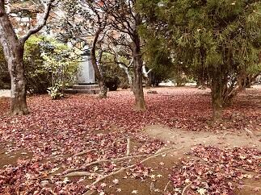
写真のとおり東郷池も同じ状況です。落葉の下を鯉が優雅に泳ぐ姿も一興かもしれませんが、これも鯉が見えればの話ですね。
第４回定期考査


 本日12月４日から７日までの４日間で第４回の定期考査が行われます。気温の変化や天候不順により体調を崩しやすい時期です。まずは、健康管理をしっかりして普段の実力を発揮できるようにしましょう。頑張ってください。(写真は晩秋の木々)
本日12月４日から７日までの４日間で第４回の定期考査が行われます。気温の変化や天候不順により体調を崩しやすい時期です。まずは、健康管理をしっかりして普段の実力を発揮できるようにしましょう。頑張ってください。(写真は晩秋の木々)卒業演奏会


 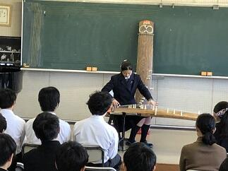
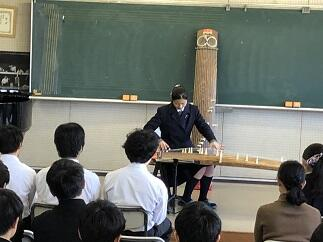
 本日、昼休みの時間を利用して３年生の音楽Ⅲ受講者４名による演奏会が音楽室で行われました。その素晴らしい演奏に心洗われ癒されました。この授業を受講していないと聞くことができない演奏を、こうして多くの先生方、生徒たちに聞く機会を作っていただいたことに感謝いたします。ありがとうございました。
本日、昼休みの時間を利用して３年生の音楽Ⅲ受講者４名による演奏会が音楽室で行われました。その素晴らしい演奏に心洗われ癒されました。この授業を受講していないと聞くことができない演奏を、こうして多くの先生方、生徒たちに聞く機会を作っていただいたことに感謝いたします。ありがとうございました。 霜月から師走へ


 霜月から師走へ、今年度も残り４カ月となりました。この８カ月を皆さんはどの様に振り返りますか。皆さんが今まで大切に育んできたものに、そろそろ花を咲かせ実を結ばせる大切な時期になって来ました。まずは、必ず来る好機をいつでも活用できるよう、これまで以上に、健康に気を付けるとともに、日ごろの力を十二分に発揮する準備をしておきましょう。
霜月から師走へ、今年度も残り４カ月となりました。この８カ月を皆さんはどの様に振り返りますか。皆さんが今まで大切に育んできたものに、そろそろ花を咲かせ実を結ばせる大切な時期になって来ました。まずは、必ず来る好機をいつでも活用できるよう、これまで以上に、健康に気を付けるとともに、日ごろの力を十二分に発揮する準備をしておきましょう。 環境整備
本校の第2グランド脇の通学路（京成佐倉駅から学校までの通学路）について、通学路に掛かっていた樹木の剪定と、雨がひどいときに第2グランドの土砂が流出しないようにする対策の一環として、土嚢をフェンス下に並べるなどの作業が一段落しました。お陰様で、枝落ち防止や視界確保による通学路の安全確保等に役立つとともに地域の景観の確保にも役立っています。千葉県教育庁関係部局のご尽力に感謝申し上げます。ありがとうございました。


季節を感じるもの
気象庁によると、今年は暖冬だそうで、関東では木枯らし1号が吹かない年となりそうです。（10月半ばの晩秋（ばんしゅう）から11月末の初冬（しょとう）の間に、初めて吹く毎秒8メートル以上の北よりの風のことです。 気象庁では、東京地方と近畿地方でこのような冬になったことを感じさせるような風が吹いたとき、「木枯らし１号」のお知らせを発表しているようです。）
 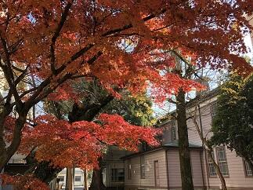
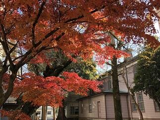
昨日も、思いのほか暖かくなりました。


体育の授業では持久走が始まりました。
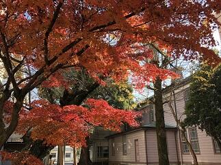昨日も、思いのほか暖かくなりました。
体育の授業では持久走が始まりました。
ダンス同好会（クリスマス公演）
ダンス同好会が、本日昼休み、中庭で、クリスマス公演を行いました。ダンス同好会は季節の折々に公演をしてくれて、多くの生徒達が楽しみにしています。


 オーディエンスと一体になったパフォーマンスは、いつ見てもすばらしいです。日頃の練習の成果が十分に発揮されていました。
オーディエンスと一体になったパフォーマンスは、いつ見てもすばらしいです。日頃の練習の成果が十分に発揮されていました。
オーディエンスと一体になったパフォーマンスは、いつ見てもすばらしいです。日頃の練習の成果が十分に発揮されていました。 経霜楓葉紅
11月26日（月）早朝。朝の寒さが厳しさを増してきましたが、本校の庭の紅葉は一段と朝日に映えてすばらしい色彩を放っています。ご近所の方で、朝の散歩の最中に本校の紅葉に感動され落ち葉をしおりにと拾われている方もいらっしゃいました。多くの方々に理解していただける自然の美しさは本当にすばらしいですね。
話は変わりますが、朝の打ち合わせで、この三連休中の各部活動の活躍の様子が発表されました。なかでも、レスリング部の２年飯島慎一郎くんは、関東選抜大会に出場が決まりました。おめでとうございます。詳しくは各部活動からの報告に委ねますが、それぞれの生徒が普段の弛まない努力・練習を積み重ねてきたからこそ、本番でその持てる力を発揮できたのでしょう。これから参加する上位の大会での活躍を期待します。

 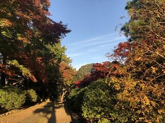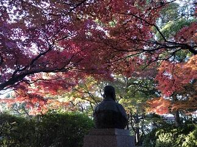
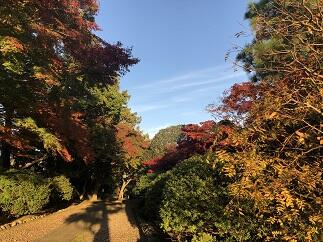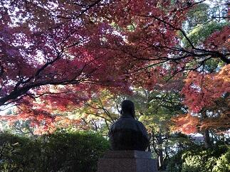 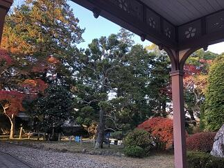朝日に映える本校の紅葉風景
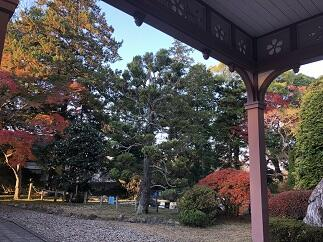朝日に映える本校の紅葉風景
話は変わりますが、朝の打ち合わせで、この三連休中の各部活動の活躍の様子が発表されました。なかでも、レスリング部の２年飯島慎一郎くんは、関東選抜大会に出場が決まりました。おめでとうございます。詳しくは各部活動からの報告に委ねますが、それぞれの生徒が普段の弛まない努力・練習を積み重ねてきたからこそ、本番でその持てる力を発揮できたのでしょう。これから参加する上位の大会での活躍を期待します。
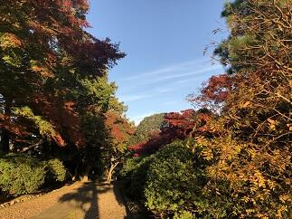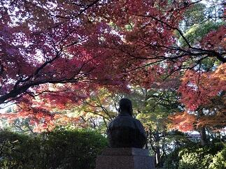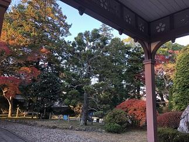朝日に映える本校の紅葉風景 記念館公開日
今日11月24日（土）は年に一度の記念館の公開日です。記念館は、平成23年（2011年）のNHK朝の連続テレビ小説「梅ちゃん先生」でも合格発表のシーンで使われるなど見る人に圧倒的な存在感と郷愁を感じさせてくれる魅力的な建物です。そして、長い歴史と伝統を刻むこの記念館は卒業生と在校生の誇りになっています。
せっかくですので、鹿山会（本校同窓会）の「佐倉高校の歴史と文化財」にある詳しい解説から一部引用・改編させていただいて記念館の紹介をさせていただきます。
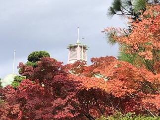 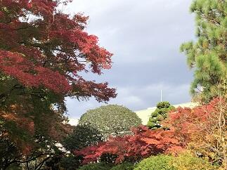「記念館は1910年（明治43年）、旧佐倉藩主堀田正倫（まさとも）公の寄付により県立佐倉中学校本館として建築された洋風木造校舎で、平成22年（2010年）には建築100周年を迎えました。」とあります。つまり、今年で108年を迎えたことになります。また、「本校は、明治32年（1898年）に県立に移管されましたが、藩校以来の校地・校舎（市内宮小路町）が手狭になったため、現校地への移転が決定しました。これに際して、堀田正倫公は、校地購入費用及び新校舎建築費4万2,000円を提供し、この資金により本館（現記念館）及び講堂が建築されました。建築工事は、明治42年（1909年）12月23日に地鎮祭、翌年2月5日に上棟式と順調に進み、4月28日に初めて授業が行われ、11月10日に新校舎で落成式が挙行されました。」とあります。まさに、現在の記念館についても堀田正倫公のご支援で校舎が建築されなければ存在しない訳です。本当にいくら感謝してもしきれない思いでいっぱいです。そして、明治、大正、昭和と多くの生徒に愛され、勉学に励んだ学び舎（現記念館）は、何度かの保存修復工事が実施されるなど今日まで大切に保存され、現在も現役で、校長室、事務室、保健室、生徒会室、会議室などに大事に使わせていただいています。なお、記念館は平成17年（2005年）7月12日に、文化庁の「国登録有形文化財」に登録指定されております。これからも、大切に保存していきたい思います。
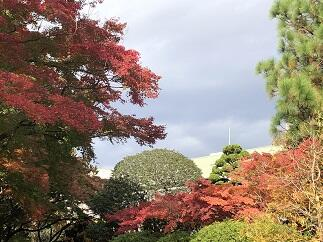「記念館は1910年（明治43年）、旧佐倉藩主堀田正倫（まさとも）公の寄付により県立佐倉中学校本館として建築された洋風木造校舎で、平成22年（2010年）には建築100周年を迎えました。」とあります。つまり、今年で108年を迎えたことになります。また、「本校は、明治32年（1898年）に県立に移管されましたが、藩校以来の校地・校舎（市内宮小路町）が手狭になったため、現校地への移転が決定しました。これに際して、堀田正倫公は、校地購入費用及び新校舎建築費4万2,000円を提供し、この資金により本館（現記念館）及び講堂が建築されました。建築工事は、明治42年（1909年）12月23日に地鎮祭、翌年2月5日に上棟式と順調に進み、4月28日に初めて授業が行われ、11月10日に新校舎で落成式が挙行されました。」とあります。まさに、現在の記念館についても堀田正倫公のご支援で校舎が建築されなければ存在しない訳です。本当にいくら感謝してもしきれない思いでいっぱいです。そして、明治、大正、昭和と多くの生徒に愛され、勉学に励んだ学び舎（現記念館）は、何度かの保存修復工事が実施されるなど今日まで大切に保存され、現在も現役で、校長室、事務室、保健室、生徒会室、会議室などに大事に使わせていただいています。なお、記念館は平成17年（2005年）7月12日に、文化庁の「国登録有形文化財」に登録指定されております。これからも、大切に保存していきたい思います。


 スティック・スタイルでまとめた中央部分（左）、正面ポーチの透かし彫り（中）、ハンマー・ビームの妻飾り（右）
スティック・スタイルでまとめた中央部分（左）、正面ポーチの透かし彫り（中）、ハンマー・ビームの妻飾り（右）

 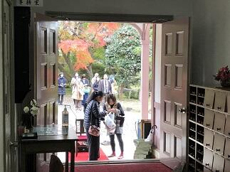
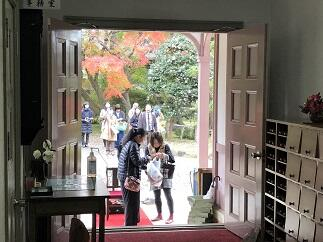

 公開日状況(同窓生の方々が大変懐かしんでいらっしゃっいました。）
公開日状況(同窓生の方々が大変懐かしんでいらっしゃっいました。）
 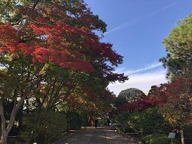
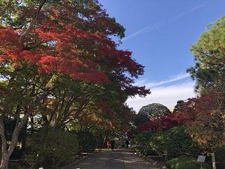 ご来館いただいた方々、本日はありがとうございました。
ご来館いただいた方々、本日はありがとうございました。
せっかくですので、鹿山会（本校同窓会）の「佐倉高校の歴史と文化財」にある詳しい解説から一部引用・改編させていただいて記念館の紹介をさせていただきます。
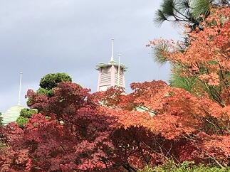
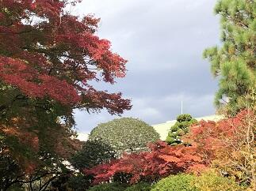「記念館は1910年（明治43年）、旧佐倉藩主堀田正倫（まさとも）公の寄付により県立佐倉中学校本館として建築された洋風木造校舎で、平成22年（2010年）には建築100周年を迎えました。」とあります。つまり、今年で108年を迎えたことになります。また、「本校は、明治32年（1898年）に県立に移管されましたが、藩校以来の校地・校舎（市内宮小路町）が手狭になったため、現校地への移転が決定しました。これに際して、堀田正倫公は、校地購入費用及び新校舎建築費4万2,000円を提供し、この資金により本館（現記念館）及び講堂が建築されました。建築工事は、明治42年（1909年）12月23日に地鎮祭、翌年2月5日に上棟式と順調に進み、4月28日に初めて授業が行われ、11月10日に新校舎で落成式が挙行されました。」とあります。まさに、現在の記念館についても堀田正倫公のご支援で校舎が建築されなければ存在しない訳です。本当にいくら感謝してもしきれない思いでいっぱいです。そして、明治、大正、昭和と多くの生徒に愛され、勉学に励んだ学び舎（現記念館）は、何度かの保存修復工事が実施されるなど今日まで大切に保存され、現在も現役で、校長室、事務室、保健室、生徒会室、会議室などに大事に使わせていただいています。なお、記念館は平成17年（2005年）7月12日に、文化庁の「国登録有形文化財」に登録指定されております。これからも、大切に保存していきたい思います。スティック・スタイルでまとめた中央部分（左）、正面ポーチの透かし彫り（中）、ハンマー・ビームの妻飾り（右）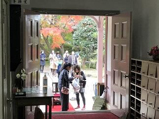公開日状況(同窓生の方々が大変懐かしんでいらっしゃっいました。）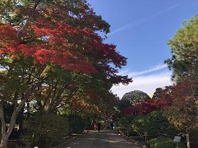ご来館いただいた方々、本日はありがとうございました。 紅葉だより３
本校の校内授業研修週間に併せて、一昨日は、ＳＧＨ運営指導協議会の方々に1年生のＳＧＨの課題研究の様子を御覧いただきご指導、ご助言をいただきました。また、昨日は、初任者研修における代表者授業を初任者の先生に英語教育拠点校としての英語の授業を中学校・高校の先生方に公開しました。その後、それぞれが指導助言の先生方を中心に、他校から参加された先生方を含めて研究協議を行いました。研究協議では内容の濃い協議がなされ、多くの学びがありました。今後の更なる授業改善に向けて頑張ってまいります。参加された先生方、ご助言いただいた先生方には厚く御礼申し上げます。
英語の研究協議会では、本校の先生方の工夫された授業のなかで生徒が生き生きと頑張る姿にどの先生方も感動していらっしゃいました。先生方と生徒の明るい表情が教室内で輝いていて素敵でした。

 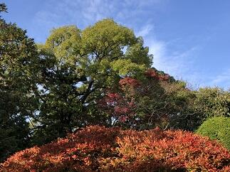昨日は、たいへん天候にも恵まれ、紅葉自体の美しが青空により一層映えて一段と綺麗でした。
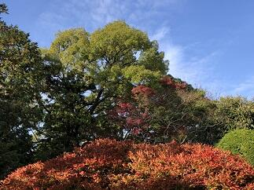昨日は、たいへん天候にも恵まれ、紅葉自体の美しが青空により一層映えて一段と綺麗でした。
英語の研究協議会では、本校の先生方の工夫された授業のなかで生徒が生き生きと頑張る姿にどの先生方も感動していらっしゃいました。先生方と生徒の明るい表情が教室内で輝いていて素敵でした。
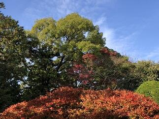昨日は、たいへん天候にも恵まれ、紅葉自体の美しが青空により一層映えて一段と綺麗でした。 紅葉だより２


 本校の庭にある樹々も立冬の時と比べても大分色づいてまいりました。曇り空で光量が少ないため紅葉の色映えが写真ではいまいちですが、状況はお伝えできるのではないかと思います。
本校の庭にある樹々も立冬の時と比べても大分色づいてまいりました。曇り空で光量が少ないため紅葉の色映えが写真ではいまいちですが、状況はお伝えできるのではないかと思います。今週は先生方がお互いの授業を相互に参観して授業改善に役立てるための校内授業研修週間となっています。併せてSGH運営指導協議会や初任研の研究協議会、英語拠点校公開授業等が行われ多くの方が授業を参観にいらっしゃいます。
修学旅行最終日その２
永観堂に別れを告げ、昼食をとりました。京都駅に向かうまで少しゆったりとしました。
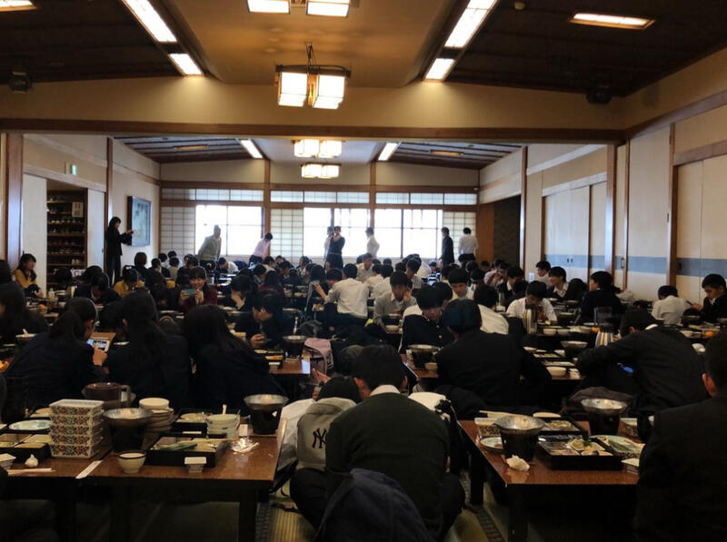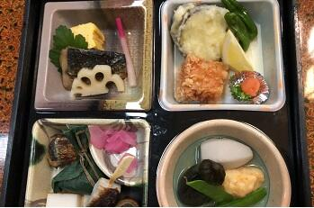
昼食が終わると、京都駅に向かいました。14時2分発のぞみに乗車します。


停車時間が非常に短いのですが、全員無事に新幹線に乗れました。乗車後は眠りについている生徒が多く見られます。静かに一路東京へ向かっています。


 東京駅に無事に到着しました。充実した修学旅行でした。東京駅から各自帰宅します。
東京駅に無事に到着しました。充実した修学旅行でした。東京駅から各自帰宅します。
4日間旅行してあらためて、本校の生徒の人間的なすばらしさとポテンシャルの高さを感じました。いつも、礼儀正しく、明るく元気に人に思いやりを持って接している姿や真摯に学ぼうとする姿勢を見るたびに誇らしく頼もしく思えました。生徒の皆さん、引率された先生方本当にありがとうございました。。そして支えていただいた保護者の皆さん、留守を守っていただいた佐倉高校先生方、今回の旅行に携われたすべての皆様に感謝申し上げます。心に残るすばらしい旅行をありがとうございました。
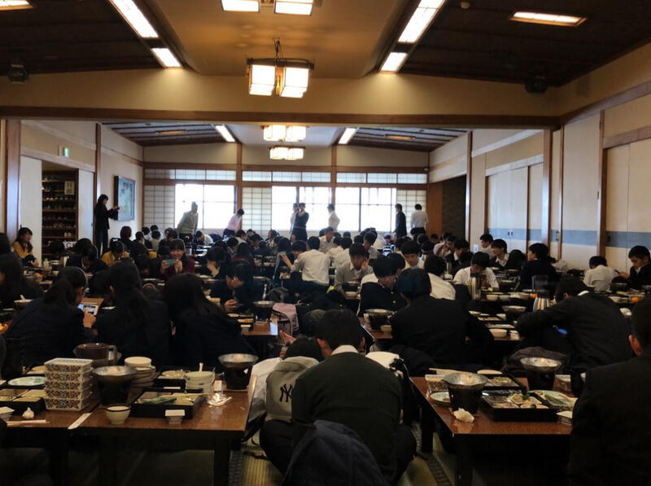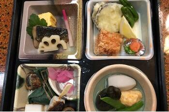
昼食が終わると、京都駅に向かいました。14時2分発のぞみに乗車します。
停車時間が非常に短いのですが、全員無事に新幹線に乗れました。乗車後は眠りについている生徒が多く見られます。静かに一路東京へ向かっています。
東京駅に無事に到着しました。充実した修学旅行でした。東京駅から各自帰宅します。4日間旅行してあらためて、本校の生徒の人間的なすばらしさとポテンシャルの高さを感じました。いつも、礼儀正しく、明るく元気に人に思いやりを持って接している姿や真摯に学ぼうとする姿勢を見るたびに誇らしく頼もしく思えました。生徒の皆さん、引率された先生方本当にありがとうございました。。そして支えていただいた保護者の皆さん、留守を守っていただいた佐倉高校先生方、今回の旅行に携われたすべての皆様に感謝申し上げます。心に残るすばらしい旅行をありがとうございました。
修学旅行最終日
いよいよ、修学旅行も最終日です。予報では天候は晴れ。今日はクラス別に活動します。名残り惜しいですが、最終日の活動に全員が元気に帰宅できるように頑張っていってきます。
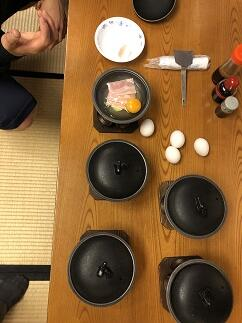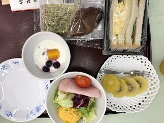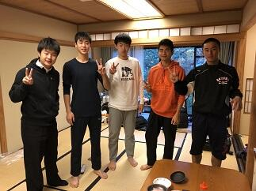朝食のベーコンエッグの準備中です。
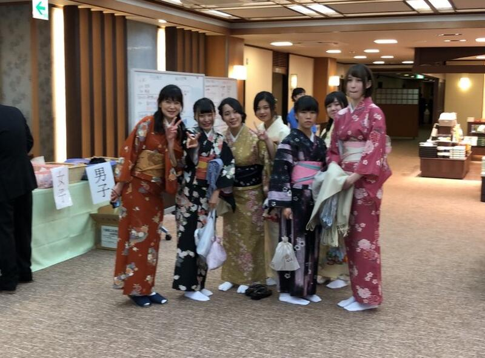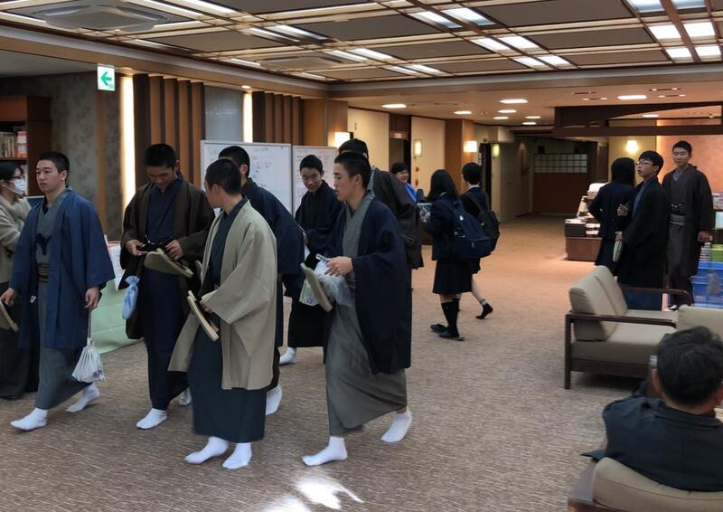 クラス別行動が始まりました。着付け体験組も出発です。
クラス別行動が始まりました。着付け体験組も出発です。
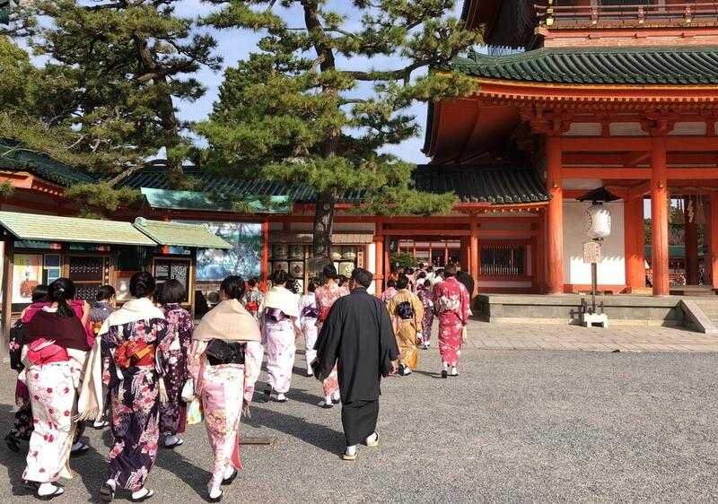
平安神宮に到着しました。ここで記念撮影です。
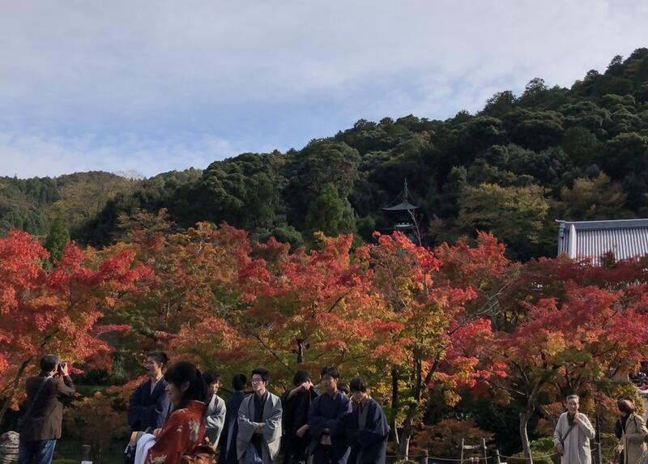


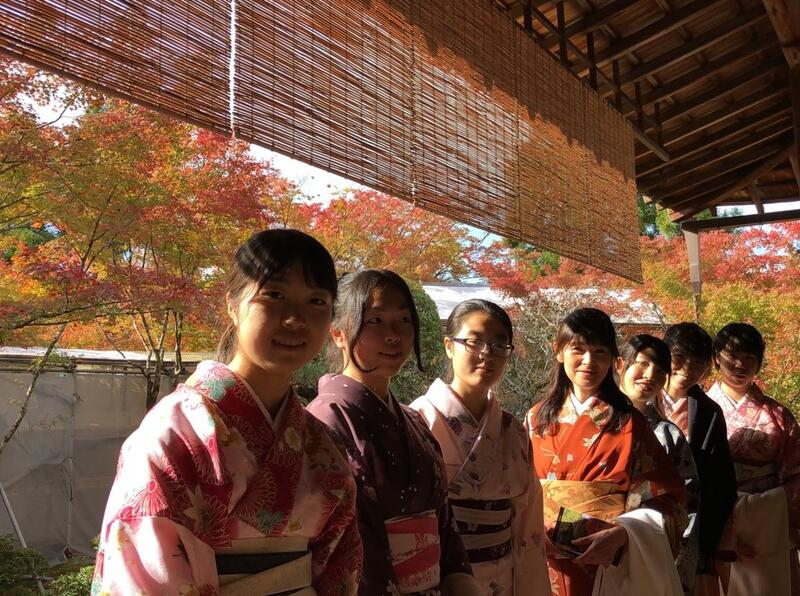
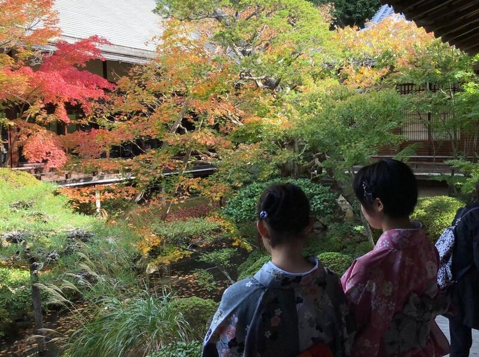
永観堂です。紅葉が見事です。日本の美を感じました。
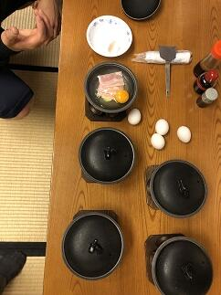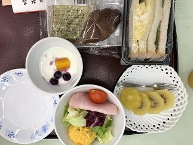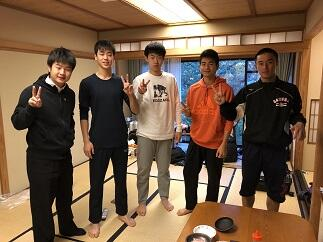朝食のベーコンエッグの準備中です。
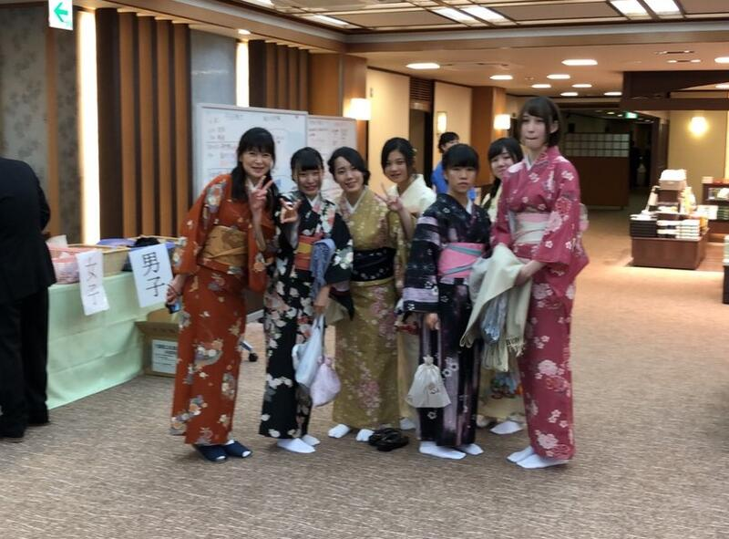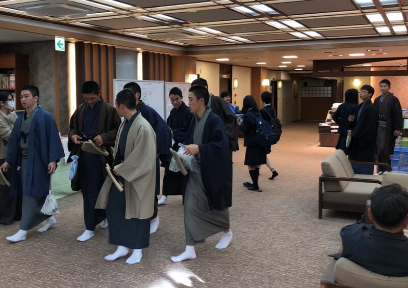
クラス別行動が始まりました。着付け体験組も出発です。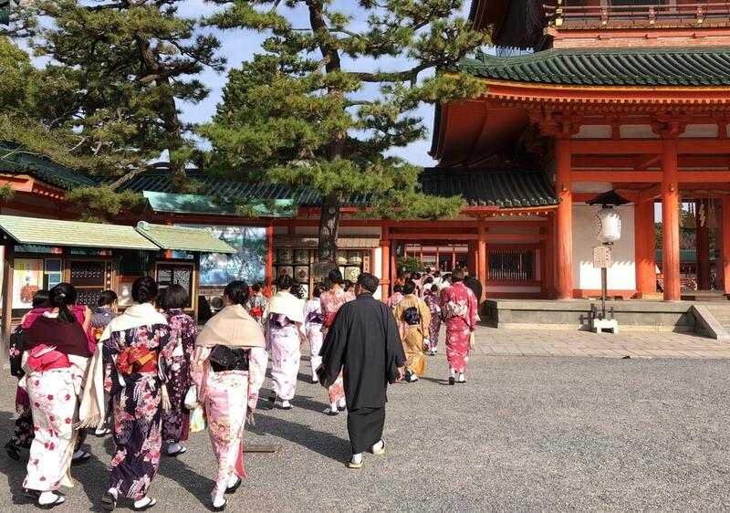
平安神宮に到着しました。ここで記念撮影です。
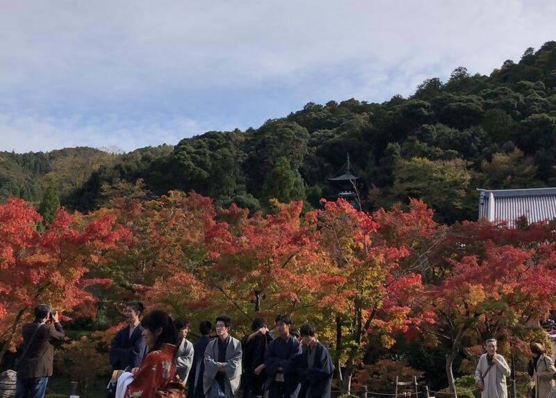
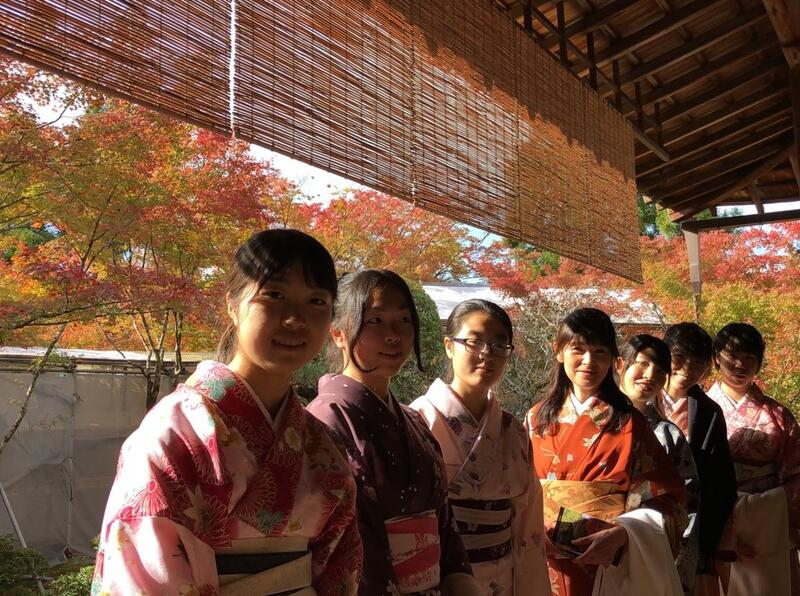
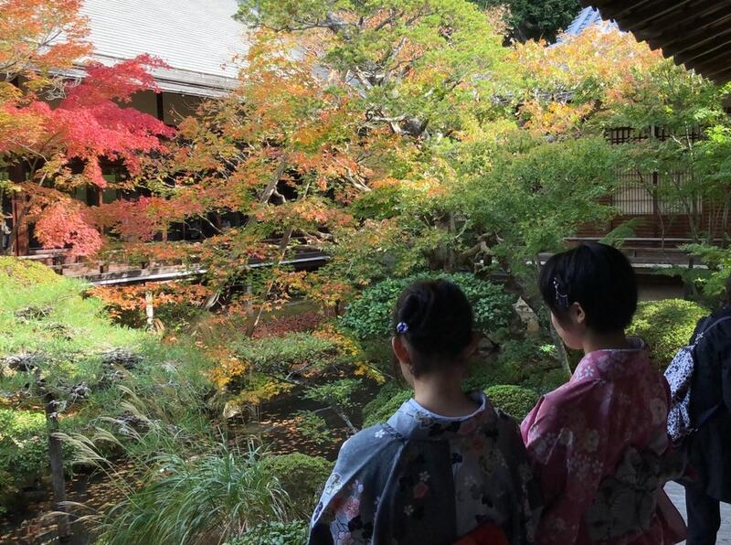
永観堂です。紅葉が見事です。日本の美を感じました。
修学旅行３日目その３
 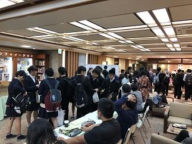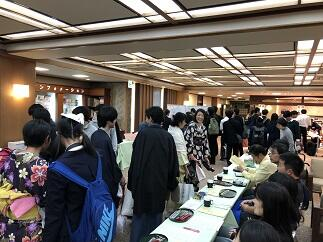生徒が、本日もお陰様で全員無事に帰ってきました。
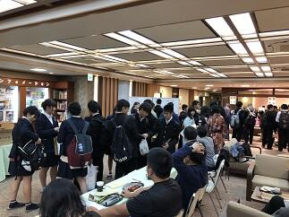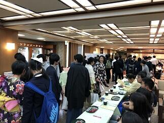生徒が、本日もお陰様で全員無事に帰ってきました。 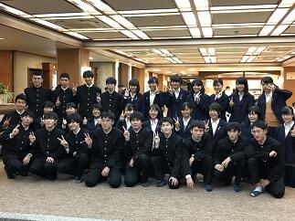今日は、これまでずっと頑張っている旅行委員のみなさんのアルバム用の写真撮影がありました。
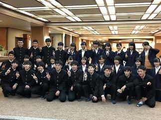今日は、これまでずっと頑張っている旅行委員のみなさんのアルバム用の写真撮影がありました。
 夕食のすき焼きの用意をしてます。すき焼きの香しい感じを部屋のみんなで表現してくれました。伝わりますか。
夕食のすき焼きの用意をしてます。すき焼きの香しい感じを部屋のみんなで表現してくれました。伝わりますか。明日は修学旅行最終日なので生徒は送る荷物の整理等で夕食後を過ごします。
修学旅行３日目その２
今日は、チェックポイントが南禅寺、龍安寺、天龍寺、二条城、東寺、八坂神社でした。生徒はそれぞれの班別計画に合わせてチェックポイントを通過しました。京都は修学旅行シーズンで、至る所に高校生や中学生が来ていました。着付けをして歩いている人たちも多く、観光スポットには、外国人観光客、修学旅行生、一般の観光客や着付け体験で着飾った観光客でいっぱいでした。チェックポイントでもなければなかなか生徒には会えませんでした。


 私は、御殿荘からまず、IPS研究所から京御苑を経由して二条城に向かいました。
私は、御殿荘からまず、IPS研究所から京御苑を経由して二条城に向かいました。

 その後、北野天満宮に３年の合格祈願に行ってきました。今日は１１月１５日で七五三詣でが大盛況でした。合格祈願は本殿に上がって、しっかりとお願いしてきました。最後には、絵馬に書いて絵馬も奉納してきました。
その後、北野天満宮に３年の合格祈願に行ってきました。今日は１１月１５日で七五三詣でが大盛況でした。合格祈願は本殿に上がって、しっかりとお願いしてきました。最後には、絵馬に書いて絵馬も奉納してきました。

 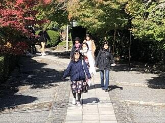
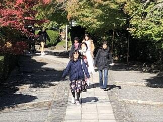 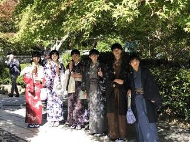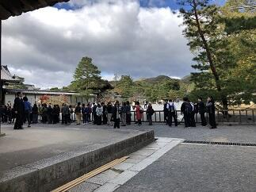
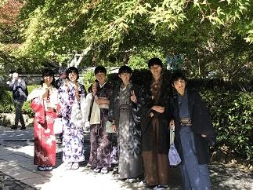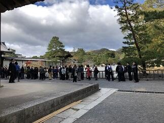
 その後、龍安寺、仁和寺、祇園、八坂神社とまわってみましたが、見学場所自体の魅力は言うに及ばす、生徒の班別活動には天気もとても良くて紅葉は一部ですがきれいな所が多かったのでとても良かったと思います。しかし、本当にどこに行っても混んでいて人ごみに入ったりすると、大変だったかもしれません。いろいろな点で、さすが京都だと思いました。
その後、龍安寺、仁和寺、祇園、八坂神社とまわってみましたが、見学場所自体の魅力は言うに及ばす、生徒の班別活動には天気もとても良くて紅葉は一部ですがきれいな所が多かったのでとても良かったと思います。しかし、本当にどこに行っても混んでいて人ごみに入ったりすると、大変だったかもしれません。いろいろな点で、さすが京都だと思いました。
私は、御殿荘からまず、IPS研究所から京御苑を経由して二条城に向かいました。その後、北野天満宮に３年の合格祈願に行ってきました。今日は１１月１５日で七五三詣でが大盛況でした。合格祈願は本殿に上がって、しっかりとお願いしてきました。最後には、絵馬に書いて絵馬も奉納してきました。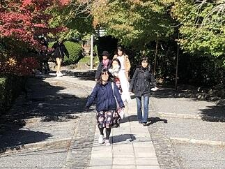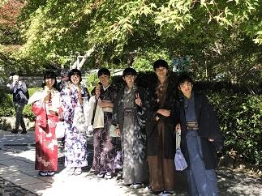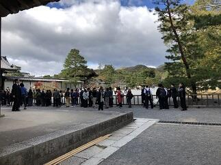その後、龍安寺、仁和寺、祇園、八坂神社とまわってみましたが、見学場所自体の魅力は言うに及ばす、生徒の班別活動には天気もとても良くて紅葉は一部ですがきれいな所が多かったのでとても良かったと思います。しかし、本当にどこに行っても混んでいて人ごみに入ったりすると、大変だったかもしれません。いろいろな点で、さすが京都だと思いました。 修学旅行３日目その１
本日は、一日班別活動で京都を散策します。予報では、天候はまずまずで、曇りときどき晴れ。一日活動しやすい１日です。


 早朝にカヌー部、陸上競技部、女子バスケットボール部が鴨川脇の遊歩道でランニングの練習をしました。犬と散歩する人や他校の生徒、地元のランナーなど多くの方がいらっしゃました。
早朝にカヌー部、陸上競技部、女子バスケットボール部が鴨川脇の遊歩道でランニングの練習をしました。犬と散歩する人や他校の生徒、地元のランナーなど多くの方がいらっしゃました。


 朝食後、着付けをして出かける班など、日ごろとは違った出発風景となりました。みんな元気に明るく出かけていきました。
朝食後、着付けをして出かける班など、日ごろとは違った出発風景となりました。みんな元気に明るく出かけていきました。
早朝にカヌー部、陸上競技部、女子バスケットボール部が鴨川脇の遊歩道でランニングの練習をしました。犬と散歩する人や他校の生徒、地元のランナーなど多くの方がいらっしゃました。朝食後、着付けをして出かける班など、日ごろとは違った出発風景となりました。みんな元気に明るく出かけていきました。 修学旅行２日目その２

 生徒が本日の班別活動を終え、全員無事に宿舎である聖護院御殿荘へ続々と帰って来ました。この後、１８：００から部屋ごとに夕食です。
生徒が本日の班別活動を終え、全員無事に宿舎である聖護院御殿荘へ続々と帰って来ました。この後、１８：００から部屋ごとに夕食です。


 夕食をとったあと１９：００から希望者は夜間拝観へ出発しました。将軍塚、青蓮院、永観堂、高台寺から希望する場所へバスで移動しました。私は、高台寺へ行きました。昼間とは表情の違う高台寺を拝観することができたいへん有意義でした。拝観した全員が帰ってきて２日目の活動もすべて無事に終了しました。明日の班別活動も思い出に残るすばらしいものにできるように頑張って参ります。
夕食をとったあと１９：００から希望者は夜間拝観へ出発しました。将軍塚、青蓮院、永観堂、高台寺から希望する場所へバスで移動しました。私は、高台寺へ行きました。昼間とは表情の違う高台寺を拝観することができたいへん有意義でした。拝観した全員が帰ってきて２日目の活動もすべて無事に終了しました。明日の班別活動も思い出に残るすばらしいものにできるように頑張って参ります。